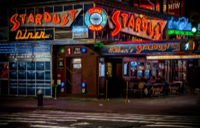

Different Taste for Different Folks in NYC
Les Halles Park Ave. S
The Boil - Cajun Kitchen
Trattoria L'incontro
The Greek Tribecca
Best restaurant of New Yorkers - 2016. (Thank you Broadway "Hamilton")
Best restaurants 2016/by Speciality
- Buvette
- BBQ
- Tavern
- Pecora
- LuckyB
- Hearth
Quick Bites in NYC
Ali's Roti
337 Utica Avenue. 718-778-7329
337 Utica Avenue. 718-778-7329
Maoz Falafel&Grill
558 7th Avenue. 212-777-0820
558 7th Avenue. 212-777-0820
Alidoro Sandwich Shop
18 East 39th Street. 646-692-4330
18 East 39th Street. 646-692-4330
The Oddest Food in NYC
Broccoli Hot Dog
Dirty Candy - 86 Allen Street
Dirty Candy - 86 Allen Street
Calf's Brain Cream(press toothpaste)
Takashi - 456 Hudson Street
Takashi - 456 Hudson Street
 Smoked Whole Goat Neck
Smoked Whole Goat NeckDucks Eatery - 351East 12th Street
Kangoroo Loin
Burke and Willis - 226 West 79th Street
Burke and Willis - 226 West 79th Street